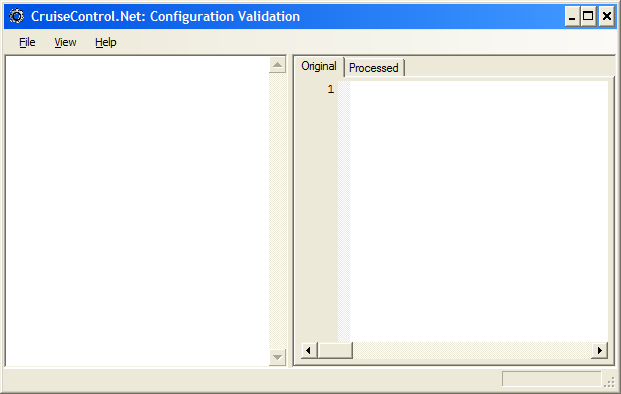

CruiseControl.NET : CCValidator
This page last changed on Mar 14, 2009 by dcameron.
CCValidator is a GUI tool for validating the contents of a ccnet.config file. It uses the same underlying rules engine as both the service and the console to check all the rules around what is valid in the configuration.
Starting
To start the validator double-click on the validator short-cut under CruiseControl.Net. This will display the following window: 
Validating
To validate a configuration file, click on File, then Open..., then select the file to validate. Selecting the file will load the file and validate it: 
- The display on the left shows the results of the validation. If there are any validation errors they will be displayed underneath the project or queue where the error occurred.
- The display on the right shows the configuration that was validated. This provides two views: original and processed.
- The original view is the view of the actual file. This is the config file on the file system, before any pre-processing or default values.
- The processed view is how CruiseControl.Net sees the file. This includes any pre-processing and default values. If there is a validation error then this view is likely to be incorrect.
| Both views will show the full details of the configuration file, including any passwords and user names. |
{kind=link}